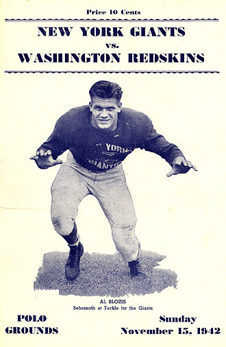
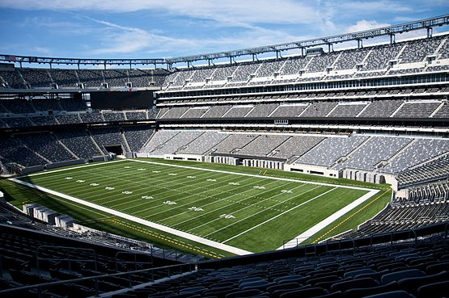
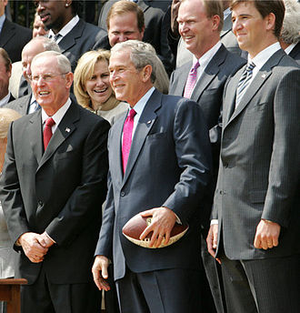

| A New York Giants 1925-ben alapított amerikaifutball-csapat, 1970 óta az NFL NFC konferenciájának keleti csoportjában (NFC East) szerepel. Eddig négy alkalommal nyert Super Bowlt. Hazai mérkőzéseit a 2010-ben átadott MetLife Stadiumban (East Rutherford, New Jersey) játssza. A szurkolók több becenevet is ragasztottak a csapatra: „Big Blue”, „G-Men”, „Jints” és „Big Blue Wrecking Crew”. | |
|  | A csapatot Tim Mara, amerikai bukméker és üzletember alapította, miután 500 dollárért jogot szerzett arra, hogy amerikaifutball-csapatot hozzon létre New Yorkban. A csapat nevét egy már negyven éve létező baseball-csapattól vette. Mérkőzéseit a Polo Groundson játszotta, amelyben több mint hetvenezer néző töltött meg, amikor az újonnan alakult csapat a Chicago Bearsszel játszott, 1925. december 6-án. A nézőket ugyan elsősorban Harold „Red” Grange, a Bears játékosa, a kor leghíresebb futballistája vonzotta, de gyorsan megszerették a New York Giants csapatát is. A gárda már 1927-ben, mindössze a harmadik szezonjában sikeresen szerepelt: megnyerte az NFL bajnokságot, miközben 13 mérkőzésen 197 pontot szerzett 20 kapott pont ellenében. A csapat vezetőedzője 1931-től, 23 éven át Steve Owen volt. Vezetésével szép sikerszériát teljesített a Giants: 1933 és 1946 között nyolcszor is bekerültek az NFL-döntőbe, amit kétszer megnyertek (1934-ben a Chicago Bears, 1938-ban a Green Bay Packers ellen). Ebben az időszakban a csapat legfontosabb egyénisége a center és linebacker poszton is kiválóan teljesítő Mel Hein volt. A csapat ezt követően kevésbé volt sikeres, 1947 után csak egyszer került be a rájátszásba, és a sikertelen szereplés miatt Steve Owen is távozott. Helyére kiváló edzői gárda került Jim Lee Howell vezetésével, a támadásokat Vince Lombardi vezényelte, a védelmet pedig Tom Landry irányította. Remek játékosok is voltak a csapatban, mint például Frank Gifford és Sam Huff. A csapatrészek közül kiemelkedett a védelem. Az újjászervezett csapat 1956-ban újra bajnoki címet szerzett, és hat év alatt ötször jutottak be a döntőbe. Ezt követően ismét egy visszaesés következett, amin erősítéssel igyekeztek túllendülni. Nagy érdeklődés és felzúdulás közepette 1966-ban az AFL-ből leigazolták a kiváló, magyar származású rúgójátékost, Peter Gogolakot, a következő évben pedig az egyik leghíresebb irányítót, Fran Tarkentont. |
| Bajnokságot ugyan nem nyertek, de Gogolak, aki a rúgójáték megújítójának számított, 646 pontot ért el, és ez a Giants történetében máig csúcs. Az 1970-es évek végétől – miután felépült a stadionjuk – új csapat építése kezdődött, 1979-ben Phil Simms irányítót draftolták (első helyen), majd a védelembe Lawrence Tylort szerezték meg, és vezetőedzőnek Bill Parcellst szerződtették. 1984-ben már bejutottak a rájátszásba, 1986-ban pedig bajnoki címet szereztek. Ez a gárda honosította meg az amerikai futballban azóta elterjedt szokást: a sikeres döntő után az edző nyakába zúdítják az üdítős hordó tartalmát. A csapat – a szezon végén visszavonuló – Parcells vezetésével 1990-ben ismét NFL-bajnok lett. A csapatok életében szinte törvényszerű átmeneti visszaesést követően, a New York Giants 2000-ben újra bajnok lett, a vezetőedző ekkor Jim Fassel volt. Kiválóan szerepeltek a rájátszásban is, bejutottak a nagydöntőbe, ahol azonban kikaptak a Baltimore Ravenstől. Újabb három sikertelen év után Tom Coughlin lett az új vezetőedző, aki a quarterback posztján mélyvízbe dobta Eli Manninget, a már komoly nevet szerzett Payton Manning, az Indianapolis Colts akkori irányítójának öccsét. A csapat némi bukdácsolás után 2007-ben bejutott a Super Bowlba, ahol Eli Manning vezérletével, Michael Strahan és Osi Umenyiora kiváló teljesítményével a védelemben, 17–14-re legyőzték a minden szakértő által esélyesnek kikiáltott New England Patriotsot. A nagydöntő legértékesebb játékosa (MVP) Eli Manning lett. 2010-re 1,6 milliárd dollárból elkészült Meadowlandsben a csapat új, világszínvonalú stadionja. A New York Giants viszonylag gyenge alapszakaszbeli szereplést követően már biztatóan, sőt egyre jobban játszott a rájátszásban, és ismét bejutott a Super Bowlba. A sors iróniája, hogy ellenfele ismét a toronymagas esélyesnek tartott New England Patriots volt, a liga legjobbjának tartott Tom Bradyvel az irányító poszton. Az indianapolisi Lucas Oil Stadium ban lejátszott változatos mérkőzésen ismét az Eli Manning által irányított New York Giants győzött, többek között Ahmad Bradshaw, Victor Cruz, Mario Manningham és a komplett védelem kiváló játékával. Ezzel a csapat megszerezte negyedik Super Bowl győzelmét, és ismét Eli Manning lett az MVP. | |
|  |  |